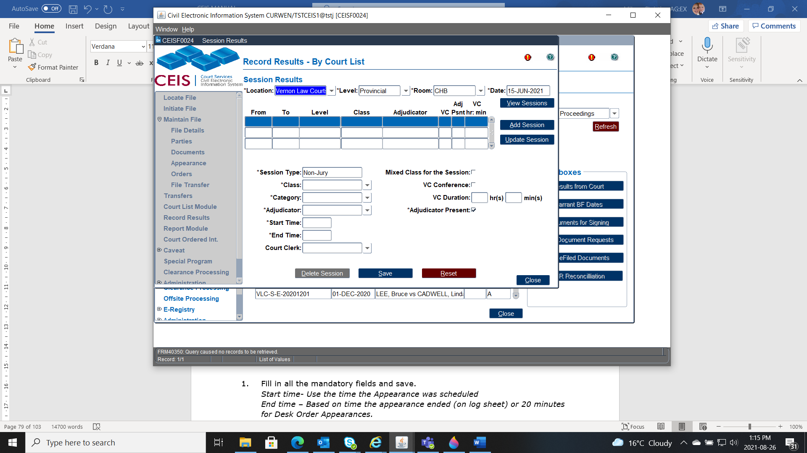

CCD typically does this piece for us now automatically, but there are still times when we need to update out Session Results manually. The Session Exception Report will advise when these results are missing and manual entry is required.

Location (1)
Level (2)
Class (3)
Date (4)
Room (5)
Court List Types (6)

Session Type (1): Select the format of the session (such as Jury, Trial, Judge Alone, Chambers, or Videoconference) from the drop-down list.
Class (2): This identifies the class of files being heard in the session. Select the appropriate class from the drop-down list. (Enable the "Mixed Class for the Session" radio button if applicable.)
Category (3): Select a session category from the drop-down list.
Adjudicator (4): Select the session adjudicator from the drop-down list.
Start Time (5): The starting time for the session (expressed in hours and minutes)
End Time (6): The ending time for the session (expressed in hours and minutes)
Court Clerk (7): Enter the name of the court clerk who attended the session, either by selecting a name from the down-down list or typing it in.
VC Conference (8): Enable this radio button if attendance was by videoconference. (You must also enter the hours and minutes in the "Duration" boxes.)
Adjudicator Present (9): Enable this radio button if there was an adjudicator present at the session.

To make changes to the session details, highlight the appropriate session. The details for that session will appear at the bottom of the screen, and you can make the necessary changes from there.
Click SAVE when you've finished editing session details.
When editing a full list day:
Session results are generally entered in chronological order -- that is, the morning's results first, and then the afternoon's.
To record session results for the afternoon, save the details from the morning session (by clicking the SAVE button after entering the details) and then click the ADD SESSION button. Enter the start time and end time for the afternoon; all other fields should carry over from the details you just entered for the morning session.
The ADD SESSION button is also used to record session results for any of the following events, if they occur:
change of judge
change of room
change of court class
if court is down for longer than 15 minutes (a new session is required in this case)
To erase the data you've just entered, click the RESET button.
To delete session results:
Select the session you wish to delete.
Click the DELETE SESSION button.